Utiliser l'Application de Standardisation des Noms Taxonomiques
taxonomic-app-fr.RmdIntroduction
La fonction launch_taxonomic_match_app() fournit une
application Shiny interactive pour standardiser les noms taxonomiques
contre la base de données taxonomique de référence des plantes d’Afrique
centrale. Cette interface visuelle est idéale pour :
- Explorer et nettoyer les données taxonomiques de manière interactive
- Comprendre la qualité des correspondances grâce au retour visuel
- Examiner manuellement les correspondances incertaines
- Enrichir les données avec des traits au niveau de l’espèce depuis la base de données
- Vérifier la provenance des noms taxonomiques via l’intégration WCVP
Prérequis
Avec identifiants de base de données (accès complet)
Pour accéder à toutes les fonctionnalités, y compris l’enrichissement
par les traits, des identifiants de base de données sont nécessaires
(voir setup_db_credentials()). Au lancement, l’application
présente un écran de connexion où vous saisissez vos identifiants.
Sans identifiants (mode accès public)
Depuis mars 2026, l’application peut être lancée sans aucun identifiant de base de données. Cliquez sur “Utiliser le mode hors ligne (référence en cache)” sur l’écran de connexion pour entrer en mode hors ligne :
- La correspondance automatique et les suggestions approximatives fonctionnent via une référence locale en cache
- La révision manuelle est entièrement fonctionnelle
- L’onglet Enrichissement par les traits est masqué (nécessite une connexion active)
- Un badge “Lecture seule” est affiché tout au long de la session
Ce mode est utile pour explorer le processus de correspondance, standardiser des noms sans compte personnel, ou travailler depuis des lieux sans accès réseau à la base de données.
Démarrage Rapide
Lancez l’application avec une seule commande :
Alternativement, pré-chargez vos données ou définissez des options :
# Avec un data.frame R
my_data <- read.csv("inventaire_arbres.csv")
launch_taxonomic_match_app(data = my_data, name_column = "nom_espece")
# Lancer en anglais (le français est la langue par défaut)
launch_taxonomic_match_app(language = "en")
# Ajuster la sensibilité de la correspondance approximative (par défaut 0.7)
launch_taxonomic_match_app(min_similarity = 0.5) # Correspondance plus permissiveGuide Étape par Étape
Phase 1 : Vue Initiale
Au premier lancement, vous verrez l’écran de connexion. Après vous être authentifié (ou avoir choisi le mode hors ligne), l’interface principale apparaît avec une barre latérale pour la configuration et des onglets pour les différentes phases du flux de travail :
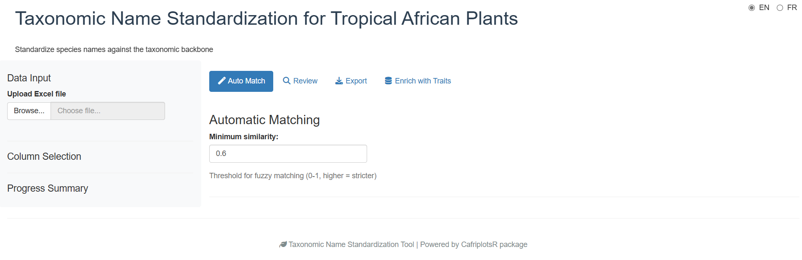
L’application utilise un flux de travail par onglets qui vous guide à travers chaque phase séquentiellement :
- Auto Match — Correspondance automatique
- Review — Révision manuelle des noms non appariés
- Export — Téléchargement des résultats
- Traits Enrichment — Ajout de traits d’espèces (masqué en mode hors ligne)
Phase 2 : Charger Vos Données
La première étape est de fournir vos données. L’application offre deux méthodes d’import :
Import par Fichier (Par Défaut)
- Charger un fichier Excel en utilisant le navigateur de fichiers (supporte .xlsx, .xls) ; pour les fichiers multi-feuilles, vous pouvez sélectionner la feuille à utiliser
- Charger un fichier CSV
-
Utiliser des données R pré-chargées (si vous avez
passé le paramètre
data)

L’application affiche un aperçu de vos données chargées pour
vérification. Les fichiers Excel sont lus avec
guess_max = 30000 pour améliorer la détection des types de
colonnes sur les grands fichiers.
Saisie Texte (Copier-Coller)
Pour standardiser rapidement quelques noms, ou lorsque vous avez une liste copiée depuis une autre source, utilisez la méthode Saisie texte :
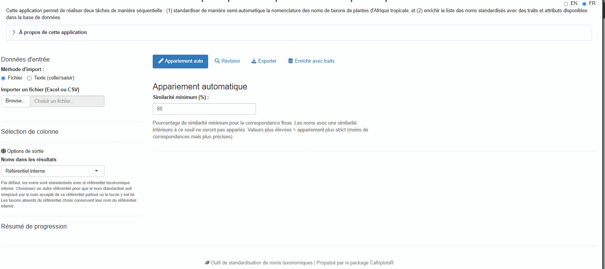
- Sélectionnez “Texte (coller/saisir)” dans les boutons radio de méthode d’import
- Collez ou tapez vos noms taxonomiques dans la zone de texte
- Cliquez sur “Charger les noms” pour traiter la saisie
Séparateurs acceptés : - Un nom par ligne
(recommandé) - Séparés par virgule :
Lophira alata, Terminalia superba, Aucoumea klaineana -
Séparés par point-virgule :
Lophira alata; Terminalia superba; Aucoumea klaineana -
Séparés par tabulation (utile lors du copier-coller depuis Excel)
L’application supprime automatiquement les lignes vides, les espaces
superflus, et les doublons tout en préservant l’ordre. Une colonne
unique nommée taxon_name est créée pour l’appariement.
Phase 3 : Sélectionner la/les Colonne(s) de Noms
Une fois les données chargées, vous avez deux options pour sélectionner les noms taxonomiques :
Mode Colonne Unique (Par Défaut)
Sélectionnez une colonne contenant le nom taxonomique complet :
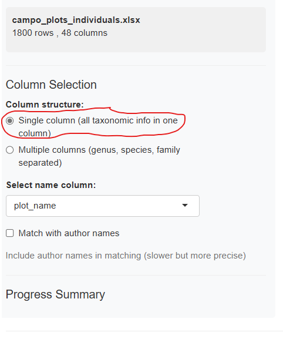
Le menu déroulant affiche toutes les colonnes disponibles de votre jeu de données. Choisissez celle contenant les noms d’espèces (généralement formatés comme “Genre espèce” ou “Genre espèce Auteur”).
Mode Colonnes Multiples
Si vos données ont des colonnes séparées pour le genre, l’espèce et la famille, activez “Utiliser plusieurs colonnes” :
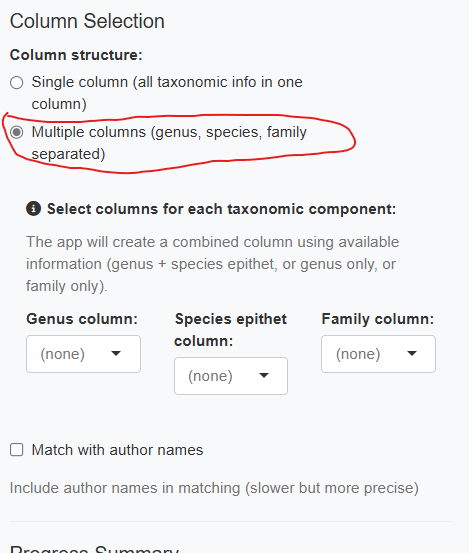
L’application combine ces colonnes de manière hiérarchique : - Genre + espèce disponibles → “Genre espèce” - Genre uniquement → “Genre” - Famille uniquement → “Famille”
Vous pouvez aussi optionnellement inclure une colonne d’auteur.
Phase 4 : Correspondance Automatique
Cliquez sur le bouton “Démarrer la Correspondance” pour commencer le processus de correspondance automatique. L’application utilise une stratégie de correspondance à cinq niveaux :
- Correspondance exacte sur l’espèce : Recherche directe du nom complet (genre + espèce)
- Correspondance exacte sur le genre : Correspondance au niveau du genre
- Correspondance exacte sur la famille : Correspondance au niveau de la famille
- Correspondance exacte sur la classe : Correspondance au niveau de la classe (ex. noms se terminant en -opsida, -psida)
-
Correspondance approximative : Correspondance de
chaînes approximative (trigramme-Jaccard via
stringdist) pour les noms restants
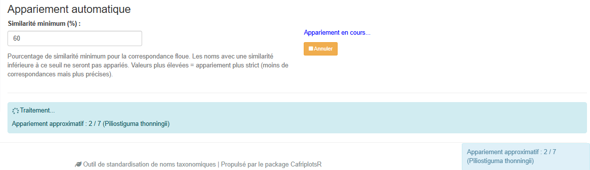
La barre de progression affiche le statut en temps réel et comptabilise correctement les noms révisés manuellement dans le pourcentage d’avancement. La barre latérale affiche des statistiques en direct :
- Nombre de correspondances exactes
- Nombre de correspondances au niveau du genre
- Nombre de correspondances approximatives
- Nombre de noms non appariés
Point de reprise / checkpoint : La progression de la correspondance est automatiquement sauvegardée dans un fichier temporaire. Si vous fermez accidentellement l’onglet du navigateur, rouvrir l’application proposera de reprendre là où vous vous étiez arrêté.
Phase 5 : Examiner les Résultats de Correspondance
Après la fin de la correspondance, l’onglet Auto Match affiche un tableau résumé avec tous les noms et leur statut de correspondance :
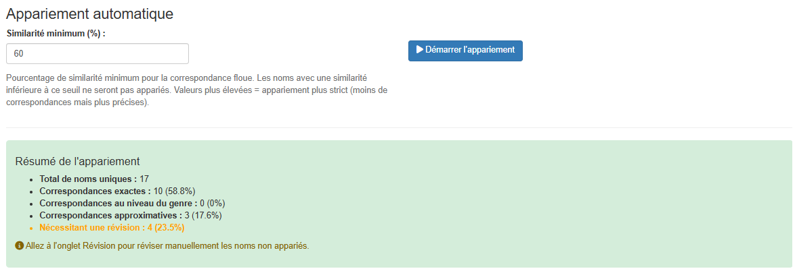
Le tableau des résultats inclut :
- Nom original : Votre nom en entrée
- matched_name : Nom trouvé dans la référence
-
match_method : Comment il a été apparié
(
exact_species,exact_genus,exact_family,exact_class,fuzzy,manual) - match_score : Score de similarité (0–1, plus élevé est meilleur)
- idtax_n : ID du taxon dans la base de données
- is_synonym : Si le nom apparié est un synonyme
- accepted_name : Nom accepté actuel (si synonyme)
Indicateurs de qualité de correspondance :
- Correspondance exacte (1.0) : Correspondance parfaite, pas de révision nécessaire
- Haute similarité (>0.8) : Très probablement correct, révision rapide recommandée
- Similarité moyenne (0.5–0.8) : Correspondance possible, révision suggérée
- Basse similarité (<0.5) : Incertain, révision manuelle requise
- Pas de correspondance : Nécessite une sélection manuelle
Phase 6 : Révision Manuelle
Pour les noms non appariés ou incertains, passez à l’onglet “Review” pour réviser manuellement et sélectionner les correspondances :
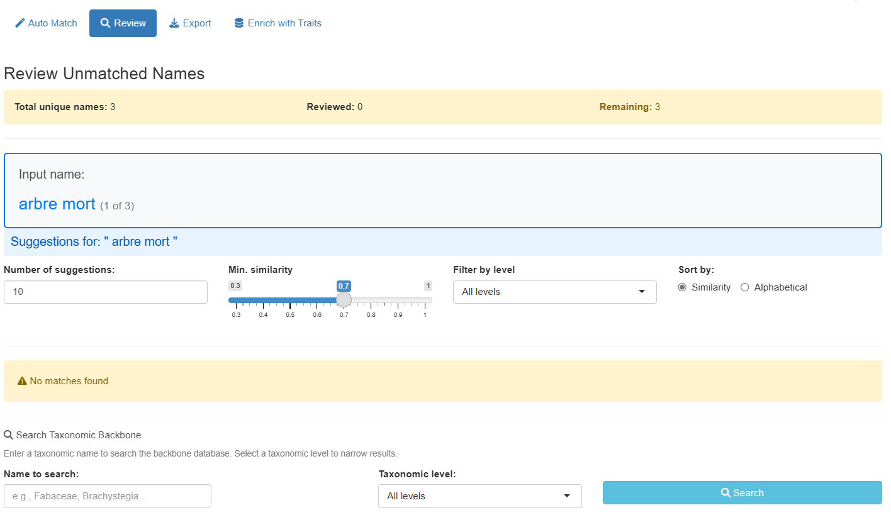
L’interface de révision fournit deux façons de trouver des correspondances :
Panneau de Suggestions Approximatives
Affiche des suggestions automatiques classées par similarité avec des options de filtrage avancées :
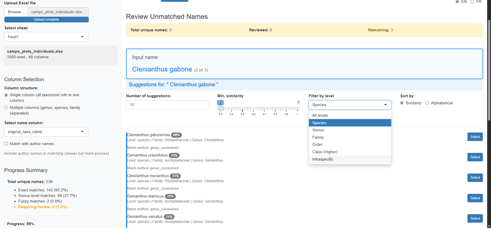
Options de filtrage :
- Nombre de suggestions : Curseur pour afficher 5–30 suggestions
- Similarité minimale : Ajuster le seuil (0.3–1.0)
- Filtre de niveau taxonomique : Filtrer par Tous, Espèce, Genre, Famille, Ordre, Classe ou Infraspécifique
- Trier par : Score de similarité ou ordre alphabétique
Chaque carte de suggestion affiche :
- Nom avec badge de similarité coloré (vert = élevé, bleu = moyen, jaune = bas)
- Niveau taxonomique et famille
- Information de synonymie si applicable
- Bouton Sélectionner pour acceptation en un clic
Panneau de Recherche Manuelle
Pour les noms sans bonnes suggestions, utilisez la recherche manuelle :
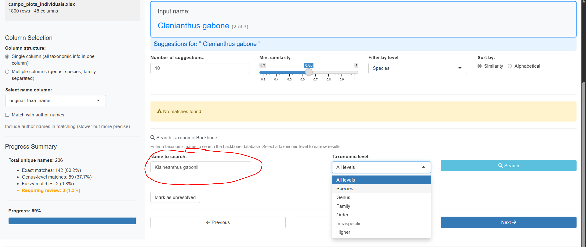
- Tapez n’importe quel terme de recherche pour interroger la référence taxonomique
- Filtrez les résultats par niveau taxonomique
- Consultez les informations détaillées pour chaque correspondance
- Sélectionnez la bonne correspondance ou marquez comme “non résolu”
Navigation :
- Utilisez les boutons Précédent/Passer/Suivant pour parcourir les noms non appariés
- Le compteur de progression affiche les noms révisés vs. restants
- L’application mémorise vos sélections et met à jour automatiquement les résultats
Phase 7 : Enrichir les Données avec des Traits
Passez à l’onglet “Traits Enrichment” pour ajouter des traits au niveau de l’espèce à vos données appariées (nécessite une connexion à la base de données ; cet onglet est masqué en mode hors ligne) :
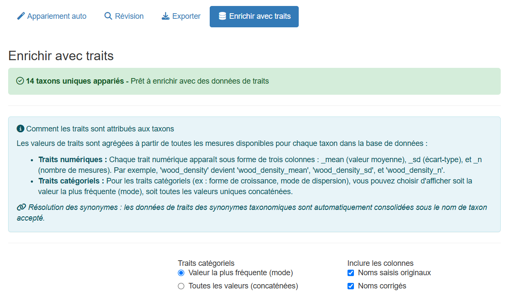
Options :
-
Mode d’agrégation catégorielle :
- “mode” — Utiliser la valeur la plus fréquente par taxon
- “concat” — Concaténer toutes les valeurs uniques
-
Sélectionner les colonnes à inclure :
- Noms d’entrée originaux
- Noms corrigés
- IDs taxonomiques
- Métadonnées de correspondance
Les traits disponibles incluent la forme de croissance, la densité du bois, les traits foliaires et les caractéristiques écologiques.
Les données enrichies combinent vos taxons appariés avec les traits sélectionnés. Deux vues sont disponibles sous forme de sous-onglets : un format large (une ligne par taxon, traits en colonnes) et un format long (une ligne par combinaison taxon × trait) :
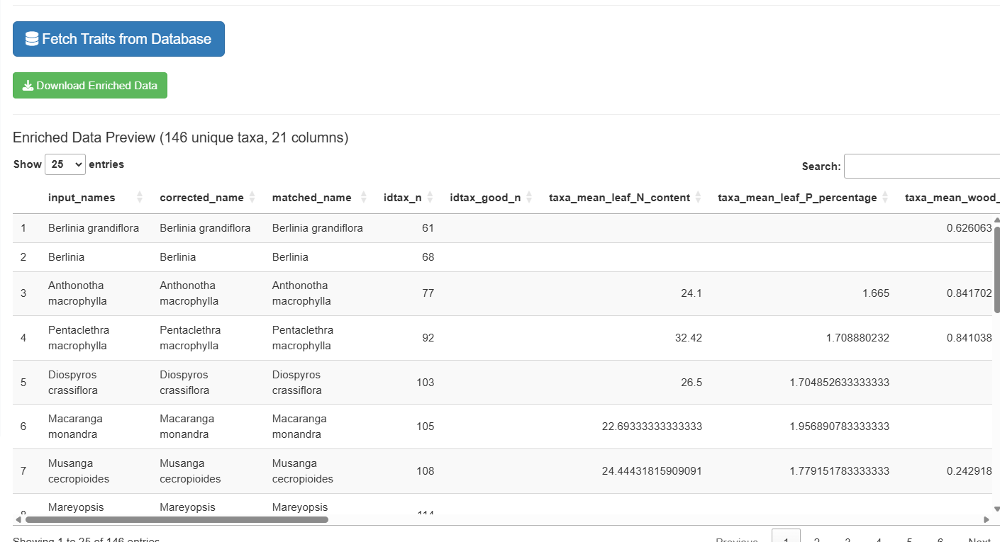
Note : L’export enrichi crée une ligne par taxon unique, pas par ligne d’entrée. Les noms d’entrée sont concaténés avec des séparateurs pipe.
Phase 8 : Exporter les Résultats
Passez à l’onglet “Export” pour télécharger votre jeu de données standardisé :
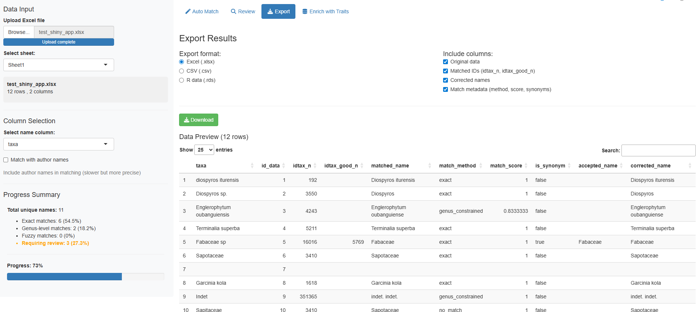
Formats disponibles :
- Excel (.xlsx) : Idéal pour partager avec des collaborateurs
- CSV (.csv) : Format tabulaire universel
- RDS (.rds) : Format natif R préservant les types de données
Colonnes sélectionnables :
- Données originales (toutes vos colonnes d’entrée)
- IDs appariés (
idtax_n,idtax_good_n) - Noms corrigés (
corrected_name,matched_name) - Métadonnées de correspondance (
match_method,match_score,is_synonym,accepted_name) - Colonnes WCVP (
wcvp_plant_name_id,wcvp_accepted_plant_name_id) — voir la section WCVP ci-dessous
Un tableau de prévisualisation montre les données avant l’export avec des contrôles de pagination.
Comprendre les Colonnes de Sortie
L’application ajoute ces colonnes à vos données :
| Colonne | Description |
|---|---|
idtax_n |
ID du taxon apparié dans la base de données de référence |
idtax_good_n |
ID du taxon accepté (pour les synonymes) |
matched_name |
Nom trouvé dans la référence |
corrected_name |
Nom standardisé final |
name_source |
Référence utilisée pour l’appariement (interne, WCVP, etc.) |
match_method |
Stratégie utilisée (exact_species,
exact_genus, exact_family,
exact_class, fuzzy, manual,
unresolved) |
match_score |
Score de similarité (0–1) |
is_synonym |
TRUE si le nom apparié est un synonyme |
accepted_name |
Nom accepté actuel (si synonyme) |
family |
Famille taxonomique |
genus |
Genre taxonomique |
wcvp_plant_name_id |
Identifiant WCVP pour le nom apparié (optionnel, voir ci-dessous) |
wcvp_accepted_plant_name_id |
Identifiant WCVP pour le nom accepté (optionnel, voir ci-dessous) |
Options Avancées
Sélection de la Langue
L’application supporte l’opération bilingue avec des interfaces en français et en anglais. Le français est la langue par défaut.
Un sélecteur de langue est situé en haut à droite de l’application : - Cliquez sur “FR” pour l’interface en français - Cliquez sur “EN” pour l’interface en anglais
Le changement est instantané et affecte tous les éléments de l’interface. Pour définir la langue initiale par programme :
# Lancer l'application en anglais
launch_taxonomic_match_app(language = "en")
# Lancer l'application en français (par défaut)
launch_taxonomic_match_app(language = "fr")Intégration WCVP
L’application peut optionnellement enrichir les résultats avec des identifiants World Checklist of Vascular Plants (WCVP). Lorsque la base de données taxa contient des données WCVP, une case à cocher “Utiliser les noms WCVP en sortie” apparaît dans la barre latérale.
L’activer ajoute deux colonnes à l’export :
-
wcvp_plant_name_id— Identifiant WCVP pour le nom apparié -
wcvp_accepted_plant_name_id— Identifiant WCVP pour le nom accepté
La colonne name_source enregistre quelle référence a été
utilisée, vous aidant à documenter la provenance taxonomique de chaque
appariement.
Ajuster la Correspondance Approximative
Contrôlez la sensibilité de la correspondance avec le paramètre
min_similarity :
# Très strict - uniquement des correspondances de haute qualité
launch_taxonomic_match_app(min_similarity = 0.8)
# Paramètre par défaut
launch_taxonomic_match_app(min_similarity = 0.7)
# Plus permissif - permet des correspondances de moindre qualité
launch_taxonomic_match_app(min_similarity = 0.5)Des valeurs plus basses ratissent plus large mais peuvent inclure des faux positifs. Des valeurs plus élevées sont plus conservatrices mais peuvent manquer des correspondances valides. La valeur par défaut a été relevée de 0.3 à 0.7 pour réduire les suggestions non pertinentes.
Augmenter les Suggestions
Afficher plus de suggestions de correspondance approximative par nom :
# Afficher les 20 meilleures suggestions au lieu des 10 par défaut
launch_taxonomic_match_app(max_suggestions = 20)Vous pouvez aussi ajuster ceci de manière interactive dans l’onglet Review en utilisant le curseur.
Mode Hors Ligne
Si vous n’avez pas de connexion à la base de données, cliquez sur “Utiliser le mode hors ligne (référence en cache)” sur l’écran de connexion. L’application :
- Télécharge et met en cache la référence localement à la première utilisation
- Effectue la correspondance de chaînes entièrement dans R via
stringdist(trigramme-Jaccard) - Prend en charge la correspondance automatique, les suggestions approximatives et la recherche manuelle
- Masque l’onglet Enrichissement par les traits (nécessite une connexion active)
- Affiche un badge “Lecture seule” tout au long de la session
Paramètres de la Fonction
launch_taxonomic_match_app(
data = NULL, # Optionnel : pré-charger un data.frame
name_column = NULL, # Optionnel : pré-sélectionner une colonne
language = c("fr", "en"), # Langue de l'interface (par défaut : "fr")
min_similarity = 0.7, # Seuil de correspondance approximative (0-1)
max_suggestions = 10, # Max suggestions par nom non apparié
mode = "interactive", # Mode de révision ("interactive" ou "batch")
launch.browser = TRUE # Ouvrir l'application dans le navigateur
)Dépannage
Problèmes de Connexion
Problème : “Échec de connexion à la base de données”
Solutions :
# Vérifier la connexion
db_diagnostic()
# Réinitialiser les identifiants si nécessaire
remove_db_credentials()
setup_db_credentials()Alternativement, utilisez le mode hors ligne (cliquez sur “Utiliser le mode hors ligne (référence en cache)” sur l’écran de connexion) pour travailler sans connexion active à la base de données.
Pas de Correspondances Approximatives Trouvées
Problème : Aucune suggestion n’apparaît pour les noms non appariés
Causes possibles : - Seuil
min_similarity trop élevé - Les noms taxonomiques
contiennent des fautes de frappe ou un formatage non standard - Les noms
ne sont pas présents dans la référence taxonomique (ex. taxons non
africains)
Solutions : - Diminuer min_similarity :
launch_taxonomic_match_app(min_similarity = 0.5) - Utiliser
le filtre de niveau taxonomique pour chercher au niveau du genre ou de
la famille - Nettoyer les noms en entrée (supprimer les espaces
supplémentaires, corriger les fautes évidentes) - Vérifier que les noms
sont des taxons africains
Performance de Correspondance Lente
Problème : La correspondance prend très longtemps pour les grands jeux de données
Solutions : - Activer le mode hors
ligne : la correspondance s’exécute localement via
stringdist, sans allers-retours vers la base de données -
Utiliser le traitement par lots à la place :
match_taxonomic_names() pour un flux de travail
programmatique - Traiter les données en morceaux (diviser les grands
jeux de données)
Quand Utiliser l’Application vs. l’Approche Programmatique
Utilisez l’Application Shiny quand :
- Exploration interactive des données
- Vous préférez les interfaces visuelles
- Le jeu de données est de petite à moyenne taille (<5 000 lignes)
- Besoin de réviser manuellement les correspondances incertaines
- Apprentissage du processus de correspondance
Utilisez match_taxonomic_names() quand :
- Traitement de grands jeux de données (>5 000 lignes)
- Automatisation des flux de travail dans des scripts
- Intégration avec des pipelines de données
- La reproductibilité est critique (NE JAMAIS SUPPRIMER LA COLONNE CONTENANT LE NOM ORIGINAL)
- Traitement par lots de plusieurs fichiers
Exemple d’approche programmatique :
# Charger les données
my_data <- read.csv("inventaire_arbres.csv")
# Apparier les noms
matched <- match_taxonomic_names(
names = my_data$nom_espece,
min_similarity = 0.7
)
# Fusionner avec les données originales
result <- cbind(my_data, matched)
# Exporter
write.csv(result, "inventaire_standardise.csv", row.names = FALSE)Voir Aussi
-
match_taxonomic_names(): Fonction de correspondance sous-jacente pour usage programmatique -
query_taxa(): Interroger directement la référence taxonomique -
match_tax(): Fonction simple de recherche taxonomique -
launch_taxo_backbone_app(): Outil interactif pour explorer la référence taxonomique -
vignette("using-query-plots-fr"): Guide pour interroger les données de parcelles
Conseils pour de Meilleurs Résultats
- Nettoyez d’abord vos données : Supprimez les fautes de frappe évidentes, les espaces supplémentaires et les caractères spéciaux
- Comprenez vos données : Sachez quels groupes taxonomiques sont dans votre jeu de données
- Utilisez le mode multi-colonnes : Si vous avez des colonnes séparées genre/espèce/famille, combinez-les pour une meilleure correspondance
- Filtrez par niveau taxonomique : Utilisez le filtre de niveau dans l’onglet Review pour trouver des correspondances au genre ou à la famille
- Examinez les scores de correspondance : N’acceptez pas aveuglément les correspondances à faible similarité (<0.6)
- Utilisez le point de reprise : L’application sauvegarde automatiquement votre progression — si vous fermez l’onglet, vous pouvez reprendre là où vous vous étiez arrêté
-
Documentez les paramètres : Notez quelle valeur de
min_similarityvous avez utilisée pour la reproductibilité - Citez les sources des données : Consultez le panneau Sources des données dans l’onglet Traits pour les citations à inclure dans vos méthodes
Exemple de Flux de Travail
Voici un flux de travail complet du début à la fin :
# 1. Charger vos données
trees <- read.csv("inventaire_forestier.csv")
# Colonnes : plot_id, tree_number, species_name, dbh, height
# 2. Lancer l'application avec les données
launch_taxonomic_match_app(
data = trees,
name_column = "species_name",
language = "fr",
min_similarity = 0.7
)
# 3. Dans l'application :
# - S'authentifier (ou choisir le mode hors ligne)
# - Revoir les correspondances automatiques dans l'onglet Auto Match
# - Utiliser l'onglet Review pour résoudre les noms non appariés
# - Activer optionnellement la sortie WCVP via la case à cocher dans la barre latérale
# - Enrichir optionnellement avec des traits dans l'onglet Traits Enrichment
# (consulter le panneau Sources des données pour les citations)
# - Exporter comme "inventaire_forestier_standardise.xlsx"
# 4. Continuer l'analyse avec les données standardisées
standardized <- readxl::read_excel("inventaire_forestier_standardise.xlsx")
# Vous avez maintenant des IDs taxonomiques propres pour des analyses ultérieures !Ce flux de travail assure que vos données taxonomiques sont standardisées et prêtes pour des analyses en aval comme les métriques de diversité, les analyses basées sur les traits ou l’intégration dans la base de données.